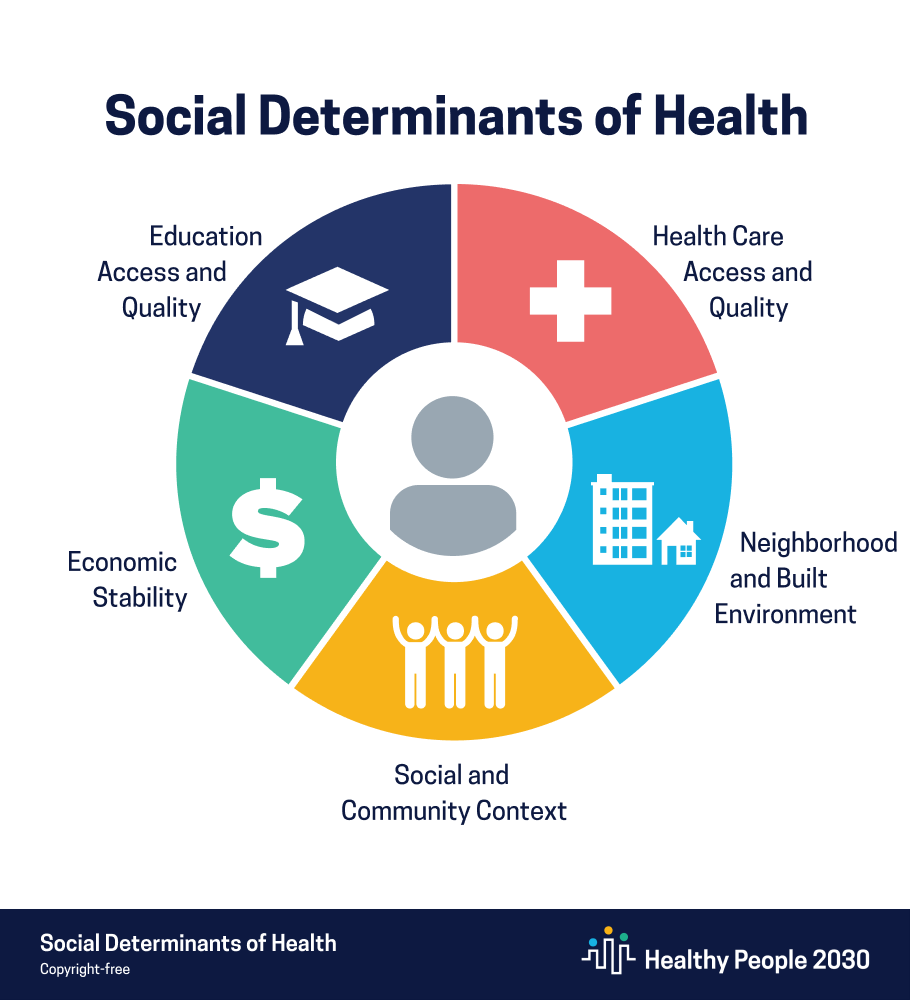

Social Determinants of Health Across Maryland
Megan Chien, Gwenyth Portillo Wightman, Karine Song
Introduction
As students attending school in Baltimore, a number of us have heard of the Black Butterfly effect. It is the phenomenon where the majority of Baltimore’s Black population is “spread out on both sides of the coveted strip of real estate running down the center of the city like a butterfly’s wings” (CITE). Some scholars are even coining the phenomenon as an “America Apartheid” in reference to South Africa’s system of segregation that defined their legislation for over 50 years. The spatial racism in Baltimore binds oppression to geography. In the 1930s, investors began redlining predominantly Black neighborhoods to mark them as the riskiest financial investments. This lead to a vicious cycle of disinvestment and disparity in Black communities. With devalued home values (a pricing difference as much as $48,000) and unequal access to credit to develop, repair, or renovate buildings, Black communities continue to suffer from a worsening racial wealth gap (CITE). The Black Butterfly has public health implications as well. Dilapidated buildings across the city experience problems with blight as well as lead paint. Although Baltimore was the first city in the United States to ban lead paint, the toxic paint and dust still linger in the air and are particularly potent when a row of townhomes is knocked down. Lead paint has been linked to learning disabilities, developmental delays, ADHD, high blood pressure, and even death (CITE).
The Black Butterfly in Baltimore inspired us to examine the effects of spatial racism on a larger scale. We decided to expand to the entirety of Maryland and examine differences between its counties. In order to more accurately compare and contrast the racial segregation, we chose to focus our analysis on the social determinants of health (SDOH). These are the “conditions in the environments where people are born, live, learn, work, play, worship, and age that affect a wide range of health, functioning and quality-of-life outcomes and risks” (CITE). There are five categories of SDOHs:
1. Neighborhood and Built Environment
2. Economic Stability
3. Social and Community Context
4. Education Access and Quality
5. Health Care Access and Quality
We will begin our analysis with an overview of the Maryland health outcomes on the basis of life expectancy and mental health resources. Then, we will analyze each category of SDOH by examining a corresponding factor:
1. Neighborhood and Built Environment → Air Quality & Access to Physical Activity
2. Economic Stability → Severe Housing Cost Burden
3. Education Access and Quality → Average Standardized Test Scores
4. Social and Community Context → Grocery Store Access
5. Health Care Access and Quality → Healthcare Access and Quality
Health Outcomes in Maryland
To examine social determinants of health across Maryland, we chose two measures as health outcomes: life expectancy and mental health.
Life Expectancy
Background
Life expectancy measures the average number of years a person can expect to live [cite].
Average Life Expectancy
Analysis
We can clearly see that the average life expectancy for Black residents is consistently lower than the average life expectancy of white residents. By examining the social determinants of health below, we will be able to further analyze the life expectancy data.
Mental Health
Background
Our mental health data comes from the Behavioral Risk Factor Surveillance System survey. To estimate mental health, survey respondents were asked, "Thinking about your mental health, which includes stress, depression, and problems with emotions, for how many days during the past 30 days was your mental health not good?" Individuals who responded 14 or more days per month are considered to have frequent mental distress [CITE COUNTY HEALTH https://www.countyhealthrankings.org/app/maryland/2021/overview].
% Frequent Mental Distress
Analysis
These two measures of mental health appear to be highly correlated, since darker colored counties tend to have darker colors on both maps. By considering the social determinants of health below, we hope to gain insight into which social determinants of health are associated with mental health outcomes.
Social Determinants of Health in Maryland
Air Quality and Access to Physical Activity
Background
Both air quality and access to physical activity are social determinants of health in the “Neighborhood and Built Environment” category.
The Air Quality Index (AQI) is a measure developed by the Environmental Protection Agency to represent the amount of common ambient air pollutants present in the air at a given time. It uses a normalized scale from 0 to 500, with higher AQI values indicating a higher level of pollution. AQI values under 100 are considered to be satisfactory [CITE EPA https://www.epa.gov/wildfire-smoke-course/wildfire-smoke-and-your-patients-health-air-quality-index].
Access to physical activity is defined as residing in a census block that is within a half mile of a park, in an urban census block that is within one mile of a recreational facility, or in a rural census block that is within three miles of a recreational facility [CITE https://www.countyhealthrankings.org/explore-health-rankings/measures-data-sources/county-health-rankings-model/health-factors/health-behaviors/diet-exercise/access-to-exercise-opportunities].
Median Air Quality Index
Analysis
The Median Air Quality Index map shows that all counties have a median air quality index of 46 or less, which meets the EPA’s requirements for satisfactory air quality. The county with the best air quality index is Howard, which has a median AQI of 28, while the county with the worst median AQI is Allegany, with a median AQI of 46. Howard has an average life expectancy of 79 years, while Allegany’s average life expectancy is 76 years.
Life expectancy is impacted by many factors including air quality. Researchers have shown that long-term human exposure to particulate pollution reduces life expectancy by nearly two years [CITE UNIVERSITY OF CHICAGO https://news.uchicago.edu/story/air-pollution-reduces-global-life-expectancy-nearly-two-years; https://aqli.epic.uchicago.edu/wp-content/uploads/2018/11/AQLI-Report.111918-2.pdf]. While lower air quality is likely not the only cause of Allegany’s lower life expectancy relative to Howard’s, greater amounts of pollution could be one contributing factor to why Allegany’s residents have a lower life expectancy.
Air quality would be an important factor to keep in mind when it comes to promoting better health across Maryland because residents have little power to protect themselves from the air they breathe. In order to ensure equitable health outcomes, policymakers should consider how air pollution affects citizens and how policies limiting air pollution could benefit citizens’ health [CITE UNIVERSITY OF CHICAGO https://news.uchicago.edu/story/air-pollution-reduces-global-life-expectancy-nearly-two-years].
According to researchers, people with greater access to opportunities for exercise should have better health outcomes. Individuals who have access to physical activity opportunities are typically healthier and have a greater life expectancy and lower prevalence of conditions like obesity and hypertension [CITE https://www.heart.org/en/health-topics/high-blood-pressure/changes-you-can-make-to-manage-high-blood-pressure/getting-active-to-control-high-blood-pressure]. People who live within a shorter distance to parks, gyms, and other exercise opportunities are more likely to engage in physical activity [CITE Sallis, James F., et al. "Distance between homes and exercise facilities related to frequency of exercise among San Diego residents." Public health reports 105.2 (1990): 179.]
Interestingly, the counties with the greatest access to physical activity do not both have high average life expectancies. Montgomery, where 100% of residents have access to physical activity, has the highest life expectancy in the state, which follows what we would expect based on the research above: areas with greater access to physical activity should have better health outcomes. Meanwhile, 100% of Baltimore City residents have opportunities for exercise, but they also have the lowest average life expectancy in the state. Although Baltimore City residents have access to physical activity, it may be the case that some residents do not take advantage of these opportunities. In order to improve health outcomes for Baltimore City citizens, policymakers and other health department officials should explore the reasons why residents do not use their opportunities to exercise.
Severe Housing Cost Burden
Background
As a social determinant of health, housing cost burden falls under the “Economic stability”. A household experiences a severe housing cost burden when they spend 50% or more of their household income on housing [CITE COUNTY HEALTH https://www.countyhealthrankings.org/explore-health-rankings/measures-data-sources/county-health-rankings-model/health-factors/physical-environment/housing-transit/severe-housing-cost-burden].
We explore associations between severe housing cost burden, cost of living index, and income. The cost of living index measures relative price levels for consumer goods and services, including housing, grocery items, housing, utilities, transportation, and healthcare. The national average for cost of living index is 100 [CITE CENSUS https://www2.census.gov/library/publications/2011/compendia/statab/131ed/tables/prices.pdf]. Data about the cost of living index for Maryland comes from the Maryland Department of Commerce [CITE MD COMMERCE https://opendata.maryland.gov/Housing/Choose-Maryland-Compare-Counties-Quality-Of-Life/dyym-bjv4].
Our income metric is median household income [CITE COUNTY HEALTH https://www.countyhealthrankings.org/explore-health-rankings/measures-data-sources/county-health-rankings-model/health-factors/social-and-economic-factors/income/median-household-income].